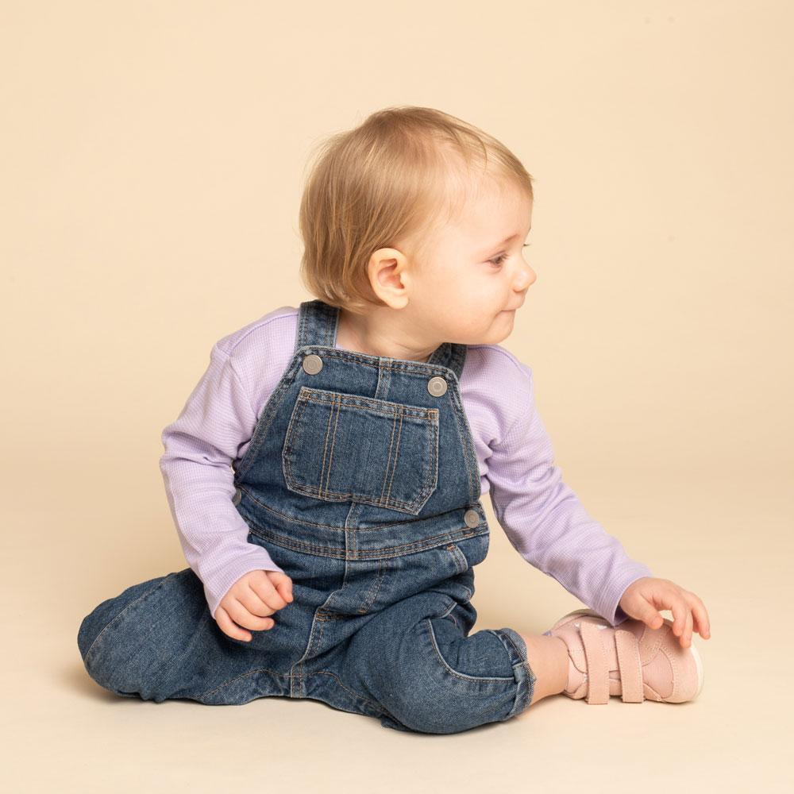
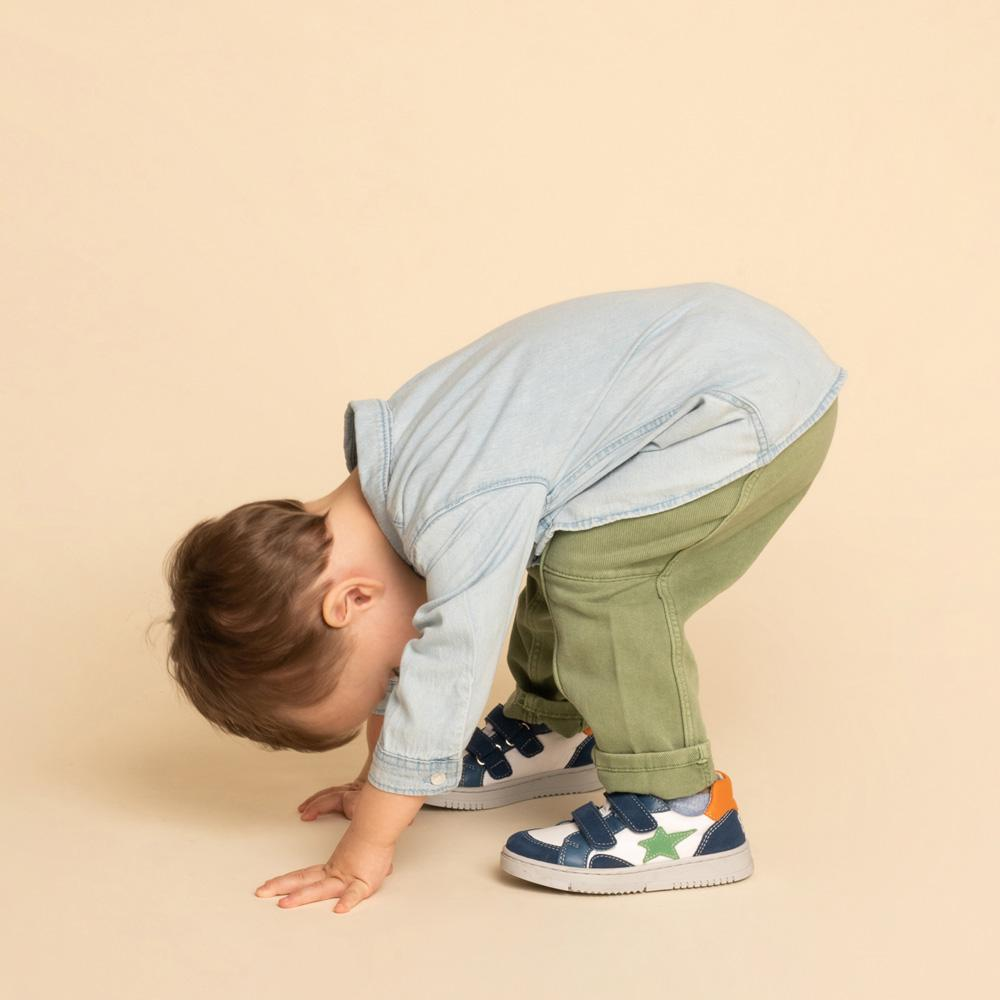
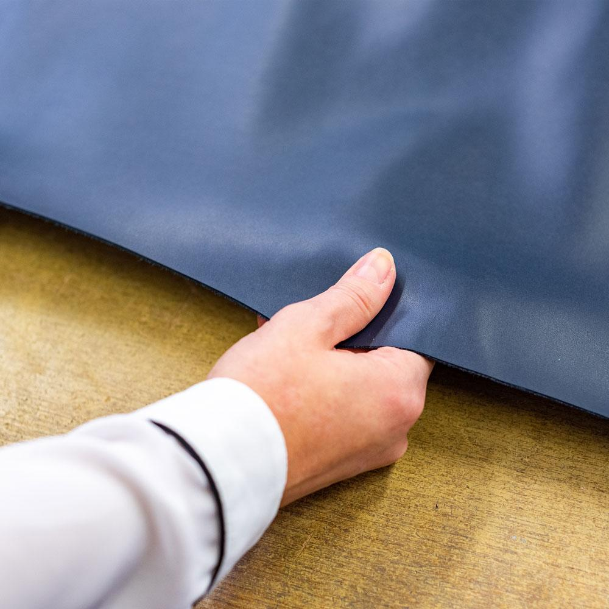
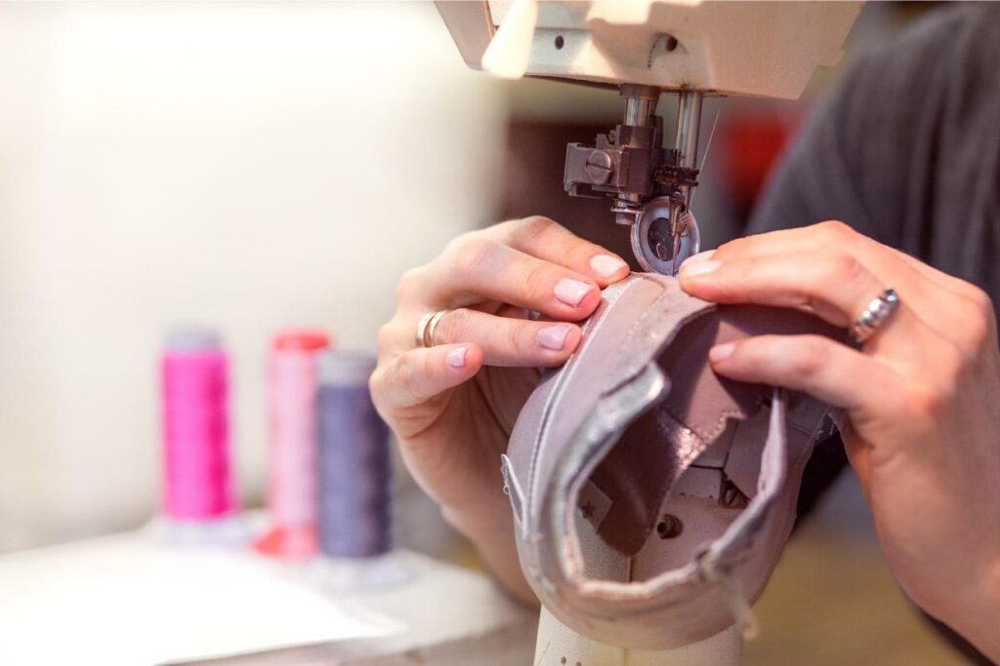
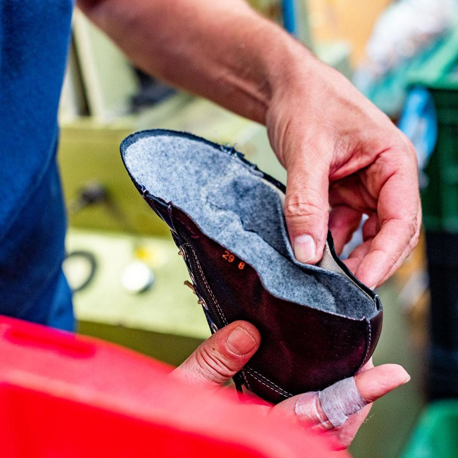

Vítejte u Cicibanu!
Tady se o nohy vašich dětí postarají odborníci.

Vyvinuto pro děti
Dětské nožky si v raném období zaslouží největší péči a pozornost, proto je velmi důležité, jakou obuv jim na první krůčky nazouváme. V Cicibanu věříme, že naše obuv umožňuje zdravý a správný vývoj dětských nohou. Péče o dětská chodidla je naší nejvyšší prioritou, o čemž svědčí desítky let zkušeností, znalostí, vlastního rozvoje a spolupráce s profesí.
Jednou z předností obuvi Ciciban je vlastní vývojové oddělení, ve kterém probíhá neustálý vývoj produktů, a to od koncepčního návrhu až po realizaci a finální produkt. Spolupráce s místní školkou a školou nám umožňuje otestovat každý model ve všech velikostech přímo na dětské noze před uvedením na trh. Boty Ciciban jsou speciálně vyvinuty pro dětskou nožičku od malých až po větší dětské velikosti. Chápeme, že každé dětské chodidlo je jedinečné a něčím výjimečné. Zdravý vývoj dětských nohou je tedy naším posláním a jeho realizace se projevuje i pravidelnou spoluprací s renomovanými odborníky.

Láska a péče o dětské nohy je hodnota, která nás spojuje a zároveň žene k novým znalostem, zkušenostem, zdokonalování a ke stále vyšším standardům kvalitní dětské obuvi.
Kvalitní materiály
Pečlivě vybrané materiály jsou předpokladem pro zajištění vysoké kvality výrobků, proto klademe velký důraz na pravidelnou kontrolu kvality základních materiálů. Naše společnost se snaží zajistit, aby naše boty byly vyrobeny způsobem šetrným k životnímu prostředí. Při výběru materiálů proto dáváme přednost přírodní kůži, která není ošetřena škodlivými a nebezpečnými chemikáliemi. To, že jsou naše výrobky skutečně vyrobeny z přírodní kůže, potvrzují i drobné rozdíly na povrchu bot nebo v jejich barevných tónech, způsobené originalitou a vysokou hodnotou použité kůže. Ve výrobním procesu přitom již řadu let používáme ekologická lepidla na vodní bázi.
Tímto způsobem také zdůvodňujeme náš slogan „Jednoduché a přirozené“, který vysvětluje způsob navrhování a výroby boty, který umožňuje správný a přirozený vývoj dětské nohy.


